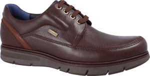

La moda está a la orden del día, y ya no solo más centrado en el sector femenino, sino que el masculino está posicionándose verdaderamente alto. Las tendencias en calzado pueden pasar desapercibido. Nos centramos, en su mayoría, en vestimenta y complementos como los más destacados. Pero, inconscientemente, dejamos más desapercibido el mundo del calzado. Y más en el calzado del sector masculino. En este post os explicaremos la importancia del los zapatos casual hombre.
Y es que las botas masculinas, los mocasines o cualquier zapato clásico no suele variar a grandes rasgos a lo largo del tiempo. Por el contrario, los modelos deportivos o los zapatos casual hombre son los que más modificaciones sufren a lo largo del tiempo. Las últimas tendencias apuestan por las zapatillas deportivas, pero estandarizándolas a un nivel de uso urbano. Naciendo de esta forma el propio zapato casual hombre.
Los modelos de zapatos casual hombre se imponen para el hombre moderno y actual, por lo que no pueden faltar para tus looks, especialmente para los que utilices con unos vaqueros o jeans. Entre dentro de estos zapatos casual hombre encontramos opciones como las bambas clásicas o las de estilo botín y de influencia de zapatos clásicos como los Oxford. De esta forma, se pueden encontrar modelos como nuestro zapato CAINE. Un modelo de corte casual, flexible y muy confortable, con cordones deportivos.
